Snørapporter · Skandinavia
Daglige snørapporter for skiløpere: hvor snøen ligger, hva som kommer og hvor du kan kjøre, fra SnowScopes snøkart og målestasjoner. Hvert tall kommer fra dagens data.
Snow by country today
The whitest countries today: Sweden (96 %), Finland (94 %) and Norway (92 %).
Most new snow in the week ahead: Norway (22 cm), Sweden (13 cm) and Finland (5 cm).
Snow today at the main resorts
- Abisko · 138 cm
- Sulitjelma Fjellandsby · 125 cm
- Tromsø Alpinpark · 68 cm
- Hemsedal skisenter · 41 cm
- Bydalsfjällen · 36 cm
- Jølster Skisenter · 36 cm
- Myrkdalen · 36 cm
- Orsa Grönklitt · 36 cm
- Gräftåvallen · 33 cm
- Järvsöbacken · 33 cm
- Hornindal · 32 cm
- Volda skisenter · 32 cm
- Åre · 30 cm
- Sunndal alpinsenter · 27 cm
- Surnadal · 27 cm
- Rukatunturi · 25 cm
- Kiririnteet · 24 cm
- Lindvallen · 24 cm
- Tusten Skiheiser · 24 cm
- Ramundberget · 23 cm
- Saariselka · 23 cm
- Ski Saariselkä · 23 cm
- Sälen · 22 cm
- Skarmoen Alpinpark Bodø · 21 cm

Kvitfjell, OL-utforbakken nord for Lillehammer: vanlig snødybde nederst, midt på og på toppen måned for måned fra 46 tidligere vintre, de sikre ukene og våren.

Hvorfor snørapporten fra Trysil viser to svært ulike tall: vanlig dybde nederst, midt på og på toppen av Trysilfjellet fra 46 tidligere vintre, måned for måned.

Til tross for 60 cm nysnø på 72 timer, ligger Skandinavias snødybde i midten av november langt under gjennomsnittet per 16. november.

Riksgränsen dominerer Skandinavia med 173 cm snødybde målt 16. november, og holder betydelig mer fjellvann enn noe annet skisenter i regionen.
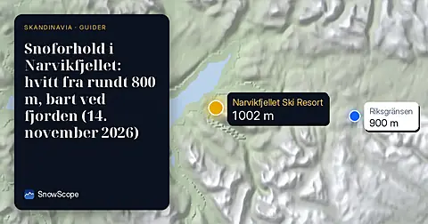
Den 14. november har Narvikfjellet cirka 50 cm på toppen og ingenting ved sjøen. Snødybden varierer med høyden over 1 000 meter.

Røros ligger på 630 m på et fjellplatå. Den 13. november lå det 11 cm målt ved værstasjonen—tynt men virkelig vinterskred for hundekjøringsesongen.
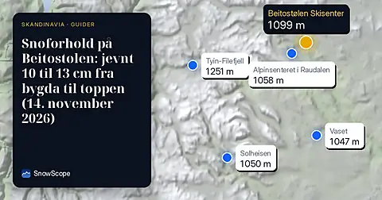
Snøforhold på Beitostølen i midten av november 2026: rundt 10 til 13 cm i hele området ifølge Norges nasjonale snøkart, 10 cm til ventet denne uka uten regn, og slik pleier 46 vintrer å se ut her.
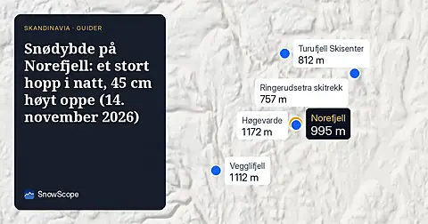
Norefjell fikk 14 cm nysnø i løpet av forrige uke, med 45 cm nå på de øvre bakkene. Data fra 13. november 2026.
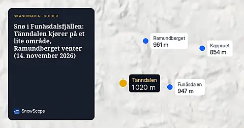
Snø i Funäsdalsfjällen i midten av november 2026: stasjonen i Ljusnedal målte 7 cm 13. november, Tänndalen har åpnet et lite område, Ramundberget åpner 19. desember. Uka som kommer og 46 vintrer.

Rovamiemis første snø kom 13. november: 7–8 cm på bakkenivå. Her er hva husky-gårdene tar betalt, når de åpner, og hvordan du går trygt med hunden din i Arktis.

Myrkdalen ligger bak normalen for mid-november, men 44 cm nysnø er varslet på toppen i løpet av den neste uken. Data fra 13. november.
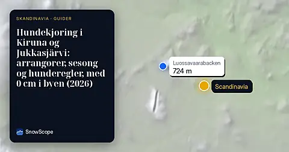
Kiruna by hadde 0 cm snø 13. november. Hundekjøringoperatører jobber med tynt snø tidlig i sesongen. Det du bør vite om turer og lokale regler.
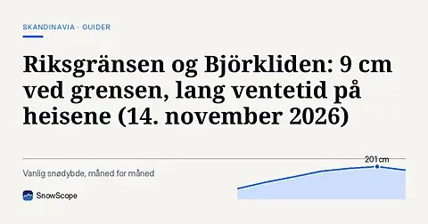
Riksgränsen holder 9 cm på grunnivå 13. november. Begge skisteder blir stengt til februar; det er ikke snødybden, men den arktiske mørkheten som bestemmer sesongen.

Hafjell har omtrent 2 cm øverst 14. november. Værvarselet varsler 9 cm neste uke, men underlaget forblir bart.
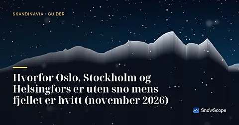
Den 13. november 2026 målte værstasjonene i Stockholm og Helsingfors 0 cm snø, mens Sälen hadde 45 cm og Umeå 20 cm. Høyde, havet, byen og uværets bane forklarer det, med tall fra 46 vintrer.
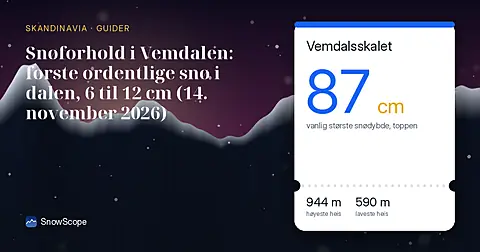
Snøforhold i Vemdalen i midten av november 2026: værstasjoner rundt Vemdalsskalet og Björnrike målte 6 til 12 cm 13. november, rundt 8 cm til denne uka, åpningsplaner og 46 vintrer.
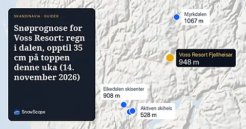
Voss får 35 cm på toppen men regn ved base den kommende uken. Snø ligger over 600 m, med 10 cm målt ved nærheten Mjølfjell 13. november.

Tromsøs husky-gårder åpner fra midten av november. 13. november hadde byen 6 cm, men fjellene hadde 44 cm. Her er hvordan du bestiller og hva du bør vite.
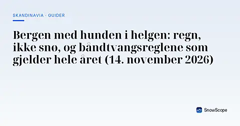
Ingen snø i Bergen 14. november: bar mark i byen, 5 cm på Kvamskogen 35 km unna. Kraftig regn søndag. År-rundt hunderegler gjelder.

Trondheims helg bringer regn og mild luft, ikke snø. Innlandssnø ligger 5–18 cm dypt, men Bymarkas stier er våte. Kjenn året-rundt-båndreglene før du går.

Kvitfjell har omtrent 5 cm på toppen 14. november 2026, langt bak det vanlige på 27 cm. Øvre bakker får snø denne uken; basen blir våt.
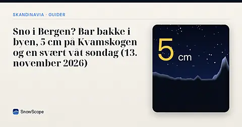
Bergen by er snøfri 13. november, men Kvamskogen 35 km innland har 5 cm. Kraftig regn kommer søndag med liten sjanse for snø.
Göteborg 13. november 2026: 0 cm i Askim, Kållered, Härryda og på alle stasjoner nær byen. Én stasjon 39 km nordøst, Gunntorp, meldte 12 cm. En mild helg og regn mandag.

Hundeeiere i Oslo, 13. november 2026: 4 cm snø på Blindern, 31 cm på Bjørnholt og 37 cm på Tryvannshøgda. Hvor hunden kan løpe løs, hva båndtvangsreglene sier i november, og en kald, tørr lørdag.
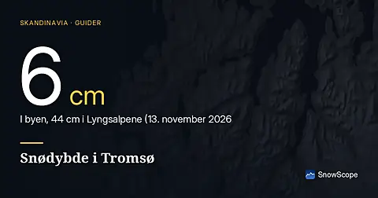
Tromsø by har 6 cm, men Lyngen-Alpene har 44 cm. SnowScope målte snø på tvers av regionen 13. november.

Trondheims kyst er bar, men 18 cm ligger innlandet på høyereliggende område. SnowScope målte snøen 13. november 2026.
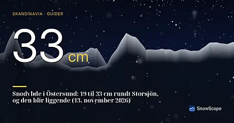
Målt snø rundt Östersund 13. november 2026: 19 cm på Norderön, 24 cm i Marby, 33 cm i Rissna. Tre til fire ganger vanlig snødybde for datoen, med en kald og tørr helg foran seg.
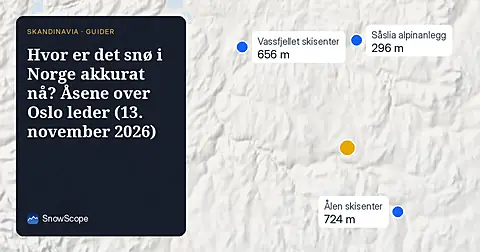
Norges dypeste snø 13. november er 37 cm i bakken nord for Oslo og 44 cm i Lyngen, Troms. Kysten er bar.
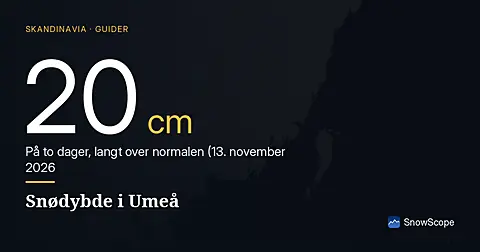
Umeå målte 20 cm snø 13. november 2026, fra bar bakke onsdag. Slik ser det ut på stasjonene rundt byen, hvorfor det er tidlig, og om snøen tåler regnet mandag.
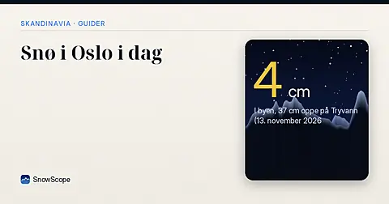
Målt snødybde i Oslo 13. november 2026: 4 cm på Blindern, 31 cm på Bjørnholt og 37 cm på Tryvannshøgda. Slik ser en vanlig midten av november ut, og dette gjør helgen med snøen.
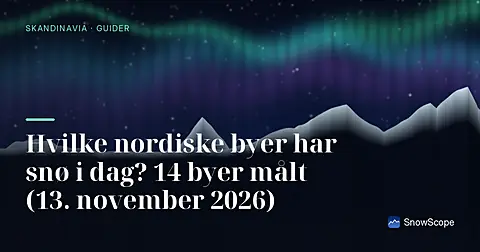
Oslo og Umeå leder 14 nordiske byer med snø 13. november: 37 cm over Oslo, 20 cm i Umeå. Kiruna og sydlige hovedsteder er barmarkerte.